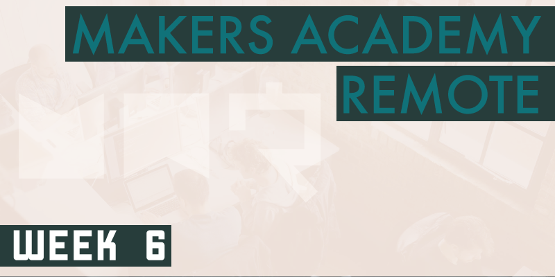

Week 6 became our first project week. We stepped away from our usual pair coding to spend the entire week building one large group project from scratch.
makersbnb
The groups were randomly assigned, and each comprised either four or five students. Our task was to build Makersbnb, an MVP (Minimum Viable Product) Airbnb clone. While I was aware of Airbnb and it’s purpose, I’d never used it before, so had to rely on some of the members of my group who have used it to fill in the gaps in my knowledge. For the uninitiated it’s a site that lets you rent your properties out, and rent other people’s properties.
Once we were all familiar with what constitutes an Airbnb clone, the next step was to construct user stories for each feature that the project would require. User stories are really useful, and I now find myself surprised that I haven’t mentioned them in a previous post, because we’ve actually been using them since week 1. The idea behind user stories is to a construct a short description of each feature that the project will require, from a particular type of user’s perspective, following the format shown below.
As a <type of user>,
so that <some reason>,
I want <some goal>.
Such as:
As a potential renter,
So that I can discuss my booking with the host,
I'd like to be able to contact the host once my booking has been confirmed.
or:
As a host,
So that I can manage my space's availability,
I'd like to be able to pick the space's available dates from a calendar.
Each user story should be granular enough that it can be accomplished in perhaps half a day, if not then it can probably be split in to further simpler stories. Constructing user stories in this manner is a common approach of Agile Development (a popular set of software development principles), and I find it genuinely very helpful in planning the required features of a project.
With the user stories written the next step was to create a GitHub repository for the project, hosted on one group member’s GitHub accounts, with the rest of us given contributor level access. We then began adding each individual user story as a separate GitHub issue, which then allowed us to integrate with Waffle.io, a ‘kanban/scrum board’ system listing each our issues taken directly from GitHub. Waffle.io helps by not only listing but also tracking the status of each issue, by automatically moving them through various customisable columns (which in our instance were: backlog, in-progress, QA, complete) depending on the status of each issue’s branch. Once in the QA column an issue is considered complete by its developers, and is awaiting review by at least one other member of the group. After one other member of the group has okay’d the code and awarded it one of GitHub’s infamous “:shipit:” squirrel emojis, the code can be merged into the main branch. We were told that this constitutes a professional workflow, and that we should adhere to it throughout the week. While we did try to follow this workflow, we strayed at times, especially after it transpired that one of our user stories in particular would actually take over 3 days to complete, much longer than the estimated half a day per user story!
Another mistake we made was to give our GitHub issues long, descriptive names. This was a problem because Waffle.io keeps track of issues partly by relying on GitHub branches being named identically to the issues they resolve. Because our issue names were so unwieldy we tended to freestyle our branch names into something more manageable, forgoing some of the waffle board’s most helpful automatic tracking features.
Once the GitHub issues and waffle board were established, it was up to us as a group to decide how best to begin working on them. As a five person group, the suggestion from our coach, which we followed, was to have two pairs working independently on separate issues, and each day allocate the fifth person as a kind of go-between, who would jump in-and-out of each pair throughout the day to bring some high-level oversight.
The project was to be built using Ruby and Sinatra, and because it was a technology stack that we were already familiar with we didn’t face too many troubles getting started. Something that we all seemed to feel a little uncomfortable with however was databases, because we haven’t had a great deal of experience using them, and this week required us to use them in some complicated ways. The tricky thing with databases (for me at least) is in planning relationships between each model (type of item). For instance the main models in our implementation were a USER, a SPACE (meaning a property to rent) and a BOOKING, which was an abstract construct that we built to hold the details of a given booking. When defining relationships between models we have to specify which belongs to which, and how many of something another thing can have. That’s a confusing statement, so here’s an example:
A USER (a host) has many SPACES (meaning that they can own several spaces).
A SPACE belongs to one USER (because a space can only belong to one particular host).
A USER (a renter) has many BOOKINGS (a user can make several bookings if they wish too).
A BOOKING belongs to one USER (the person who wishes to rent the space).
So far that’s not too bad, but considering that a user can be a potential renter or a host…
A USER (a renter) also has many spaces, because the space also has to be tied to the user who wishes to rent it. We need a way to differentiate spaces that a user owns with spaces that they wish to rent.
A SPACE has many users when we consider the users who wish to rent it as well as its host. Our space now belongs to one USER (the host), but can have many other USERS renters).
A USER has many bookings, both as a renter and as a host.
A BOOKING has many USERS (still only one host, but now also a renter).
These relationships have to be hard coded and can be very troublesome to change, so needed to be planned ahead of time. The above is only a simplification, and actually omits further relationships. We can address certain issues with some clever thinking, for example by not assigning a space to a renter, because the space can be obtained from the booking that’s assigned to that user as a renter. However sorting out this mess took some serious thought. Attempting to delete from the database was a problem too, because before deleting these models we had to break all of the associations again, otherwise we’d leave orphaned data in the database, causing all sorts of potential problems. Compounding the confusion even further is the fact that for most of the development time the database felt kind of nebulous. While a database can be equated to a series of interlinked spreadsheets, which can be viewed on the command line, during development we generally had no view of this, so had to try to construct a mental picture. and keep it in our minds while we worked.
In a brave (or foolhardy) decision we decided to forgo the use of a calendar API in favour of building our own calendar. We did manage this, but it took so long that once it was complete we just didn’t have the time to implement it within the master branch, which was a real shame because on its own branch it was functional and quite impressive. The stupid thing is that our reasoning for building our own calendar was to save ourselves from having to waste time learning a third-party calendar API! If we’d known how long it would take to produce our own solution I don’t think it would have ever been a consideration. Our coach Sam has said on more than one occasion that one of the primary differences between junior and senior developers is that juniors don’t know how to estimate the time that something will take, because of their lack of experience to draw from. On this occasion we definitely proved him right! Building the calendar was a difficult but rewarding challenge, and while it didn’t make it into the final project it was a great learning experience.
Retrospective
In my opinion project week was a big success, and I know many others would agree. It was liberating to be given free reign over a project, rather than following the steps handed to us as we have in previous weeks. We worked well as a group and each person contributed well. We were advised to each consider focusing on our weaknesses rather than our strengths in order to force ourselves to improve, but we also made sure to use each persons’s strengths where possible, which only seemed sensible when considering the quality of the final product and the deadline to work to.
It’s all too easy to look back on the weeks’ work and focus only on those features that remained unimplemented, the problems that never got fixed. However when I consider that as a group who didn’t know how to do any of this stuff until very recently, we managed to get an MVP product almost complete within a week, it’s quite amazing. A week is an incredibly short amount of time to attempt to create an MVP of this complexity from scratch, and I think that given a month we would have been able to produce something quite impressive, which would still be an incredibly short amount of time for a group this inexperienced. That alone is a testament to how much we’ve learned by this halfway point.
The plan for the weekend was to continue working on the solo JavaScript bowling challenge from last weekend, but our group took the unanimous decision to spend the weekend furthering our Makersbnb project instead, ahead of presenting it to the rest of the cohort the following Monday. In retrospect I’m unsure whether this was the best course of action. On a usual weekend we work all day Saturday and all day Sunday on a new solo project, and even though it’s a bit tiring to code all weekend after a long week of coding, it’s a fresh project that keeps things interesting. By spending the entire weekend on the same project that we’d worked on all week I think we all began to feel some burnout by Sunday afternoon, and with the prospect of no days off for at least another six weeks that wasn’t a sensible position to put ourselves in. Conversely the two extra days did afford us the time to get some more features in place, and to spend some time on the site’s presentation, so that the end result didn’t resemble something from the earliest days of the web.
As I mentioned above, the final presentations of our projects to the rest of the cohort will fall in to week 7, so I’ll cover them as part of that week’s post.